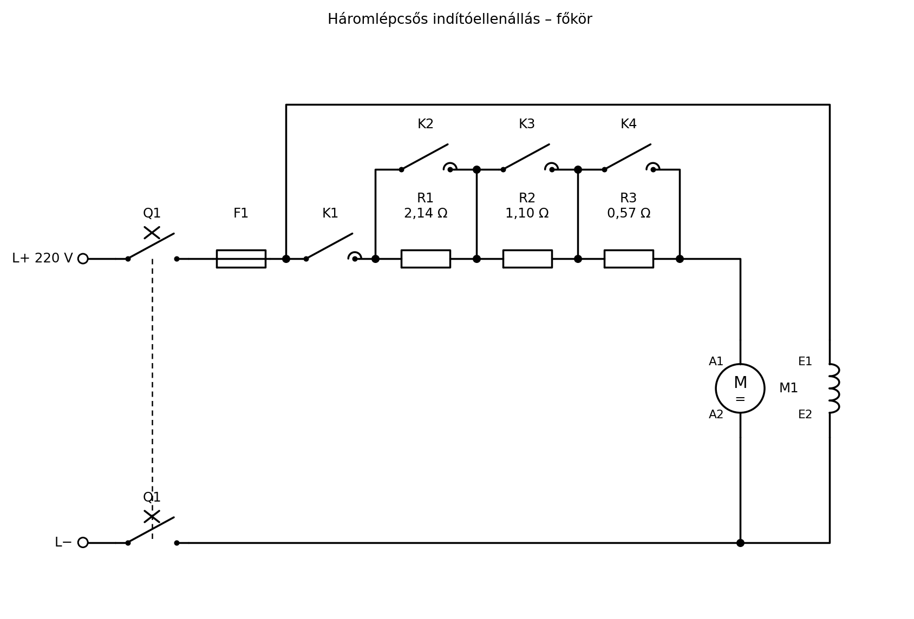
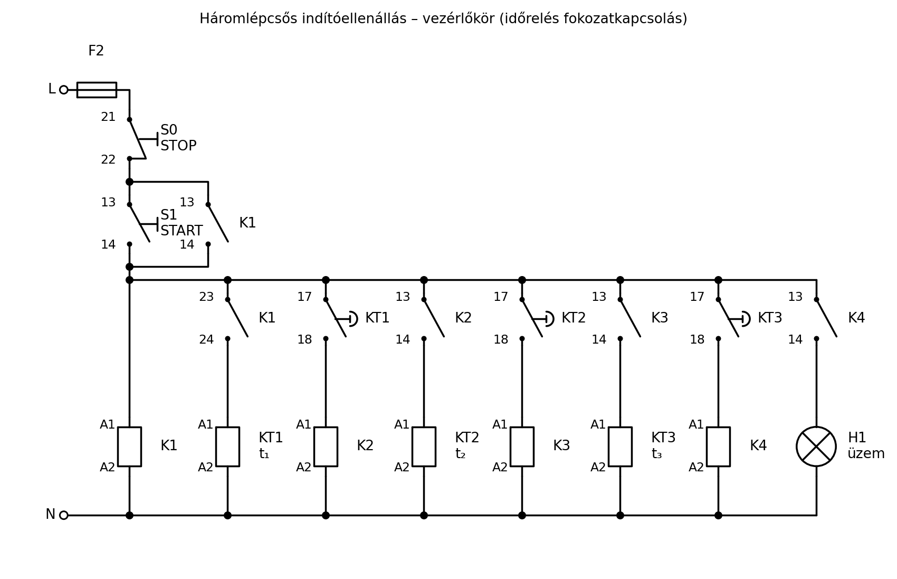

1. példa – Párhuzamos gerjesztésű motor névleges
adatai
Adott: egy egyenáramú párhuzamos gerjesztésű motor
kapocsfeszültsége
,
armatúraellenállása
,
armatúraárama
.
A gépállandó és a fluxus szorzata
(a névleges pontban).
Keresett: az indukált feszültség, a fordulatszám és
a nyomaték.
Számítás. Először az indukált feszültség:
A szögsebesség:
A percenkénti fordulatszám:
A nyomaték:
Ellenőrzés. A mechanikai teljesítmény
,
az indukált teljesítmény
.
2. példa – Soros gerjesztésű motor indítása
Adott: soros gerjesztésű motor, amelynek armatúra-
és gerjesztőköri ellenállása együtt
.
A hálózati kapocsfeszültség
.
Keresett: a közvetlen indításkor fellépő áramcsúcs,
ha az indukált feszültség kezdetben nulla, valamint az az
indítóellenállás, amely az indítási áramot
-re
korlátozza.
Számítás. Indításkor
,
ezért
.
Az áram:
Ez igen nagy érték, amely a keféket, a kommutátort és a tápláló
hálózatot károsíthatja. A kívánt
-es
indítási áramhoz szükséges teljes ellenállás:
A külső indítóellenállás:
Ellenőrzés. Ha a motor felgyorsul, az indukált
feszültség nő, az áram csökken. Az indítóellenállást fokozatosan ki kell
iktatni, hogy a gép elérje a névleges fordulatszámát.
28.1.2 Gyakorlati útmutató: az
egyenáramú motor mérése
Biztonsági korlát. Tanuló csak műhelyben, oktató
felügyeletével, feszültségmentes és teljesen megállt gépen mér. Az öt
biztonsági lépés: (1) leválasztás az armatúra- és a
gerjesztőkörben is, (2) visszakapcsolás elleni biztosítás, (3)
a feszültségmentesség ellenőrzése, (4) földelés és rövidre zárás, ahol
előírt, (5) a szomszédos feszültség alatti részek lefedése. A mérőáramot
induktív tekercsen mindig a forrásnál, fokozatosan csökkentve szüntesd
meg, a mérőszondákat ne húzd le áram alatt.
Eszközök: négyvezetékes (Kelvin-) milliohm-mérő,
vagy áramkorlátos egyenáramú táp (például 5–10 A) és mV-mérő;
multiméter; szigetelésiellenállás-mérő (500 V DC); kefeemelő vagy
szigetelő lap.
Mérések (a tartományok szemléltetők, kis gépekre;
ellenőrizendő: gyártói adat):
a) Armatúrakör, A1–A2 a keféken át: kb. 0,1–1 Ω. A
kefeátmenet miatt a tengelyt több helyzetbe forgatva mérj; ha a szórás
10 %-nál nagyobb, kommutátor- vagy kefehiba gyanús.
b) Gerjesztőtekercsek: E1–E2 (párhuzamos) kb.
50–500 Ω; D1–D2 (soros) kb. 0,01–0,2 Ω; F1–F2 (külső) kb. 50–500 Ω.
Ismeretlen jelölésű gépen így a tekercs típusa is felismerhető.
c) Szeletmérés (menetzárlat, szakadás, forrasztási
hiba): emeld fel a keféket, vezess két szomszédos kommutátorszeletre
állandó mérőáramot (például 5 A), és mérd a szeletek közti
feszültségesést; ismételd körben minden szomszédos párra, táblázatba
írva. Egyenletes érték (például 12 mV ± 5 %) = jó; egy helyen közel
nulla = menet- vagy szeletzárlat; kiugróan nagy = szakadás vagy rossz
forrasztás az adott szeletnél. (A hullámos és hurkos tekercselés eltérő
mintát adhat, ezért a szomszédos párok egymással vetendők össze.)
d) Szigetelés: tekercsek–test és
armatúrakör–gerjesztőkör között 500 V DC-vel, 1 perces értékkel;
tanulási elfogadási határ legalább 1 MΩ (ellenőrizendő: gyártói és
szabványi határérték). Az elektronikát előtte le kell választani.
Jelenség
Valószínű ok
Mérés, ellenőrzés
Javítás
nem indul
szakadt armatúra- vagy gerjesztőkör, nem fekvő kefe, nincs táp
a) és b), kefék, védelmek
szakadás megszüntetése, kefecsere
erős szikrázás
kopott kefe, szennyezett kommutátor, szelethiba, rossz
kefehelyzet
alacsony feszültség, soros ellenállás bent maradt, szelet- vagy
menetzárlat
kapocsfeszültség terhelve, c)
indítófokozatok, armatúra javítása
túlmelegszik
túlterhelés, menetzárlat, rossz hűtés
árammérés, c), d)
terheléscsökkentés, tekercsjavítás, hűtés
fordítva forog
felcserélt A1–A2 vagy gerjesztés
a bekötés összevetése a kapocsrajzzal
az armatúrakapcsok cseréje
Mintajegyzőkönyv-sor (példaadat): „Szeletmérés, 24
szelet, 5 A: 23 szeletpáron 11,6–12,4 mV; a 17–18. szelet között 1,1 mV.
Értékelés: a 17–18. szelet között zárlat (szelet vagy a hozzá tartozó
tekercs). Intézkedés: armatúra javítása, a gép üzembe nem adható.”
28.1.3 Önellenőrzés
Mi a kommutátor szerepe az egyenáramú motorban?
Milyen gerjesztési módok léteznek, és melyiknek a fordulatszáma a
leginkább terhelésfüggő?
Miért veszélyes a soros gerjesztésű motor üresjáratban való
járatása?
Írd fel az egyenáramú motor kapocsfeszültség-egyenletét motoros
üzemben.
Hogyan lehet csökkenteni az indítási áramot?
Melyik szabályozási mód alkalmas a fordulatszám névleges érték fölé
növelésére?
28.1.4 Feladatok
1. feladat (A)
Definiáld röviden, mi a kommutátor feladata, és miért van rá szükség az
egyenáramú gépben?
2. feladat (A)
Egy párhuzamos gerjesztésű motor kapocsfeszültsége
,
armatúraellenállása
,
armatúraárama
.
A gépállandó és a fluxus szorzata
.
Számítsd ki az indukált feszültséget, a szögsebességet, a percenkénti
fordulatszámot és a nyomatékot.
3. feladat (B)
Soros gerjesztésű motor armatúra- és gerjesztőköri ellenállása együtt
.
A hálózati feszültség
.
Mekkora indítóellenállást kell az áramkörbe iktatni, hogy az indítási
áram ne haladja meg a
-t?
Mekkora lenne az áram indítóellenállás nélkül?
4. feladat (B)
A 2. feladat motorjánál a terhelés nő, ezért az armatúraáram
-re
emelkedik. A fluxus állandó marad. Számítsd ki az új fordulatszámot és
nyomatékot. Hány százalékkal csökkent a fordulatszám a névleges értékhez
képest?
5. feladat (C)
Magyarázd meg a képlet alapján, mi történik a párhuzamos gerjesztésű
motor fordulatszámával, ha a terhelés (azaz az armatúraáram) hirtelen
megnő, miközben a kapocsfeszültség és a fluxus állandó. Miért nem szabad
a párhuzamos gerjesztőkört üzem közben megszakítani?
6. feladat (D)
Egy régi egyenáramú motor erős szikrázást mutat a keféknél, és a
fordulatszám ingadozik. Milyen ellenőrzéseket végeznél el
feszültségmentes állapotban? Sorold fel a lépéseket, és indokold, milyen
hibára utalhatnak a jelek.
28.1.4.1 Gyakorló
feladatgenerátor
A fenti feladatokon túl az alábbi generátor korlátlan számú
gyakorlófeladatot ad négy szinten: (A) indukált feszültség,
fordulatszám, nyomaték, indítóáram és indítóellenállás; (B)
terhelésváltozás és a KΦ gépállandó meghatározása mért fordulatszámból;
(C) fluxusgyengítés és armatúrafeszültség-szabályozás; (D) többlépcsős
indító
(-képlet)
és dinamikus fék. A HTML-kiadásban beírhatod az eredményt (±1 %
tűréssel), a lap felismeri a tipikus hibákat (például ha
helyett
-t
írsz, vagy
helyett
-val
számolsz), és lépésenként megmutatja a megoldást.
Statikus változat (mint a PDF-ben)
Egyenáramú motor feladatgenerátor – mintafeladat
lépésenkénti megoldással
Nyomtatott változatban az alábbi rögzített sorozatot oldd meg, majd
ellenőrizd a megoldókulccsal; különösen figyelj arra, hogy
fluxusgyengítéskor a fordulatszám nő, azonos nyomatékhoz pedig nagyobb
armatúraáram kell.
Rögzített feladatsor. Gyakorló sorozat (mag 2811):
tíz feladat a generátor típusaiból, kézzel rögzített adatokkal.
(A) Egyenáramú motor: U = 220 V, Ra =
0,4 Ω, Ia = 25 A, KΦ = 1,3 Vs. Számítsd ki az indukált
feszültséget (E), a fordulatszámot (n) és a nyomatékot (M).
(A) Motor: U = 110 V, az armatúrakör ellenállása
Ra = 0,25 Ω. Mekkora az áram közvetlen indításkor (E = 0), és
mekkora indítóellenállás korlátozza az indítási áramot 60 A-re?
(A) Egyenáramú motor: U = 24 V, Ra =
0,15 Ω, Ia = 8 A, KΦ = 0,07 Vs. Számítsd ki az indukált
feszültséget (E), a fordulatszámot (n) és a nyomatékot (M).
(B) Mérés: U = 220 V, Ra = 0,5 Ω,
Ia = 30 A, a mért fordulatszám n = 1450 1/min. Mekkora a KΦ
gépállandó?
(C) Motor: U = 220 V, Ra = 0,4 Ω,
Ia = 25 A, KΦ = 1,3 Vs. Fluxusgyengítéssel a fluxust 80 %-ra
csökkentjük; az armatúraáram változatlanul 25 A marad. Mekkora az új
fordulatszám?
(C) Motor: U = 220 V, Ra = 0,4 Ω,
Ia = 25 A, KΦ = 1,3 Vs. Fluxusgyengítéssel a fluxust 80 %-ra
csökkentjük; a motor azonos nyomatékot ad (a szükséges
Ia-val). Mekkora az új fordulatszám és az armatúraáram?
(C) Motor: U = 220 V, Ra = 0,4 Ω,
Ia = 25 A, KΦ = 1,3 Vs. Mekkora armatúrafeszültség kell, hogy
azonos armatúraárammal n = 1000 1/min legyen?
(A) Egyenáramú motor: U = 440 V, Ra =
0,2 Ω, Ia = 100 A, KΦ = 2,5 Vs. Számítsd ki az indukált
feszültséget (E), a fordulatszámot (n) és a nyomatékot (M).
(D) Dinamikus fékezés: a motor indukált feszültsége
E = 210 V, Ra = 0,5 Ω. Mekkora fékellenállás korlátozza a
fékáramot 35 A-re?
(D) Többlépcsős indító: U = 220 V, Ra =
0,6 Ω, Imax = 40 A, m = 2 lépcső. Mekkora λ =
Imax/Imin és Imin?
Megoldókulcs.
A rögzített feladatsor megoldókulcsa
Feladat
Szint
Eredmény
1.
A
E = 210 V; n = 1543 1/min; M = 32,5 N·m
2.
A
Iközv = 440 A; Rind = 1,58 Ω
3.
A
E = 22,8 V; n = 3110 1/min; M = 0,56 N·m
4.
B
KΦ = 1,35 Vs
5.
C
n2 = 1928 1/min
6.
C
n2 = 1905 1/min; Ia2 = 31,25 A
7.
C
U = 146,1 V
8.
A
E = 420 V; n = 1604 1/min; M = 250 N·m
9.
D
Rf = 5,5 Ω
10.
D
λ = 3,028; Imin = 13,2 A
Kidolgozott megoldások.
E = U − Ia·Ra = 220 − 25·0,4 = 210 V.
ω = E / KΦ = 210 / 1,3 = 161,5 rad/s.
n = 60·ω / (2π) = 1543 1/min.
M = KΦ·Ia = 1,3·25 = 32,5 N·m.
Indításkor ω = 0, így E = 0: Iközv = U / Ra =
110 / 0,25 = 440 A.
Szükséges teljes ellenállás: Rössz = U / Iind =
110 / 60 = 1,833 Ω.
Rind = Rössz − Ra = 1,833 − 0,25 = 1,58
Ω.
E = U − Ia·Ra = 24 − 8·0,15 = 22,8 V.
ω = E / KΦ = 22,8 / 0,07 = 325,7 rad/s.
n = 60·ω / (2π) = 3110 1/min.
M = KΦ·Ia = 0,07·8 = 0,56 N·m.
E = U − IaRa = 220 − 30·0,5 = 205 V.
ω = 2π·n/60 = 151,8 rad/s.
KΦ = E / ω = 205 / 151,8 = 1,35 Vs.
Az új fluxussal KΦ2 = 0,8·1,3 = 1,04 Vs.
E2 = U − Ia2Ra = 220 − 25·0,4 = 210
V.
n2 = E2 / KΦ2 · 60/(2π) = 1928 1/min –
a fluxus csökkentése a fordulatszámot NÖVELI.
Az új fluxussal KΦ2 = 0,8·1,3 = 1,04 Vs.
Azonos nyomatékhoz (M = KΦ·Ia) Ia2 = Ia
/ 0,8 = 31,25 A – az áram NŐ.
E2 = U − Ia2Ra = 220 − 31,25·0,4 =
207,5 V.
n2 = E2 / KΦ2 · 60/(2π) = 1905 1/min –
a fluxus csökkentése a fordulatszámot NÖVELI.
ω = 2π·n/60 = 104,7 rad/s; E = KΦ·ω = 1,3·104,7 = 136,1 V.
U = E + IaRa = 136,1 + 10 = 146,1 V.
E = U − Ia·Ra = 440 − 100·0,2 = 420 V.
ω = E / KΦ = 420 / 2,5 = 168 rad/s.
n = 60·ω / (2π) = 1604 1/min.
M = KΦ·Ia = 2,5·100 = 250 N·m.
A fékkörben E hajtja az áramot: Rössz = E / If
= 210 / 35 = 6 Ω.
Rf = Rössz − Ra = 6 − 0,5 = 5,5 Ω.
A kommutátor a forgórész tekercseiben indukálódó váltakozó irányú
feszültséget egyenirányúvá alakítja a keféknél, illetve motoros üzemben
az egyenáramot a megfelelő tekercsoldalakra váltogatja, hogy a nyomaték
egyirányú legyen.
Külső, párhuzamos, soros és vegyes gerjesztés. A soros gerjesztésű
motor fordulatszáma a leginkább terhelésfüggő (nagy nyomatéknál erősen
leesik).
Mert a fluxus lecsökken, és a fordulatszám a
képlet szerint veszélyesen megnő, ami mechanikai sérülést okozhat.
.
Indítóellenállással a armatúrakörben, vagy szabályozott táplálással
(feszültségcsökkentéssel).
Fluxusgyengítéssel (a gerjesztőáram csökkentésével) lehet a
fordulatszámot a névleges fölé növelni.
1. feladat megoldása (A)
A kommutátor a forgórész tekercseinek végeit a kefék alá kapcsolja.
Forgás közben mindig azokat a tekercsoldalakat kapcsolja be, amelyekben
az indukált feszültség éppen a kívánt irányú, így a keféken egyenirányú
feszültség jelenik meg (generátoros üzem), illetve az egyenáramot úgy
váltogatja, hogy a forgatónyomaték iránya állandó maradjon (motoros
üzem).
4. feladat megoldása (B)
Az indukált feszültség az új áramnál:
Az új szögsebesség:
Az új fordulatszám:
A fordulatszám-csökkenés a korábbi
értékhez képest:
ami százalékban:
Az új nyomaték:
A terhelés növekedése tehát kis fordulatszámesést okozott, miközben a
nyomaték nőtt.
5. feladat megoldása (C)
A képlet szerint:
Ha a terhelés nő,
nő, így az
feszültségesés nő, ezért
és vele
csökken. Párhuzamos gerjesztésnél a fluxus közel állandó, ezért a
fordulatszám-csökkenés mérsékelt. Ha a gerjesztőáramkör megszakad,
a maradék fluxusra esik le, és a képlet nevezője nagyon kicsi lesz: a
fordulatszám rendkívül megnőhet, ami a gép tönkremeneteléhez vezet.
Ezért a gerjesztőkört nem szabad üzem közben megszakítani, és néha
megszakadás elleni védelmet alkalmaznak.
6. feladat megoldása (D)
Feszültségmentes állapotban a következő lépéseket végezném el:
Lekapcsolás és biztosítás: a táplálás lekapcsolása,
visszakapcsolás elleni biztosítás, feszültségmentesség ellenőrzése
kétpólusú feszültségvizsgálóval (MSZ EN 61243-3) minden vezetőpáron
(L–L, L–PE), a vizsgáló működését előtte és utána ismert forráson
ellenőrizve.
Kefék ellenőrzése: megvizsgálnám a kefék hosszát és
állapotát; a kopott vagy törött kefék cserére szorulnak. Ellenőrizném a
kefetartók rugónyomását.
Kommutátor felületének vizsgálata: egyenletes,
fényes felületet várok; beégés, barázdák, szigetelőanyag kiemelkedése
vagy olajszennyezés szikrázást okozhat. A felületet finom
csiszolóvászonnal lehet tisztítani, de csak a gyártó előírása
szerint.
Kommutátor és kefék illeszkedése: a keféknek teljes
felületükön fel kell feküdniük; ha nem illeszkednek, be kell
járatni.
Armatúratekercs folytonossága és szigetelése:
feszültségmentesítés (öt szabály) után a folytonosságot ohmmérővel, a
tekercsek szigetelési ellenállását a testhez képest szigetelésmérővel
(pl. 500 V DC, MSZ EN 61557-2) mérném.
Csapágyak és tengelyjáték: a csapágykopás a
forgórész ütését, ezzel a kommutátor egyenetlen járását okozhatja.
A szikrázás és a fordulatszám-ingadozás leggyakoribb okai: kopott
kefék, rossz kefenyomás, szennyezett vagy barázdált kommutátor, valamint
tekercs- vagy kommutátorszelet-hiba. A feltárt hibát a gyártói utasítás
szerint kell javítani, és a munkát dokumentálni kell.
28.1.6 Indítás és
fordulatszám-szabályozás – példák és gyakorlók
Kidolgozott példa. A fejezet tanulási modelljének
motorja:
,
,
,
,
így
.
Indítási áramkorlát:
→
.
lépcső:
→
.
Ellenőrzés:
,
tehát a motor névleges terhelés mellett is gyorsul minden lépcsőn.
Teljes köri ellenállások:
;
a fokozatok:
,
,
(összesen
).
Átkapcsolási fordulatszámok (ahol
,
):
kb. 770, 1166 és 1370 1/min; a végén
-nél
.
Ellenpélda. Ha csak
lépcsőt választanánk:
és
.
A motor névleges terhelésnél az első fokozaton „elakadna”: az áram nem
csökken 18,5 A-ig, mert a terhelés 20 A-t igényel, így a következő
átkapcsolás áramfüggő vezérlésnél soha nem következne be (időrelésnél
pedig a vártnál nagyobb áramugrás lenne). Ezért kell a lépcsőszámot a
terheléshez választani.
A főkörben a K1 fővonali kontaktor után a három fokozat sorosan van,
és mindegyiket egy-egy kontaktor (K2, K3, K4) záró főérintkezője hidalja
át:

Háromlépcsős indítóellenállás – főkör -
Alapállapot: minden kontaktor elengedett. K1 a fővonali kontaktor; K2,
K3, K4 záró főérintkezője rendre az R1, R2, R3 fokozatot hidalja át (R1
= R_ind1 ≈ 2,14 Ω, R2 ≈ 1,10 Ω, R3 ≈ 0,57 Ω). Az E1–E2 párhuzamos
gerjesztőtekercs a K1 előtt, közvetlenül a tápon.
A fokozatokat időrelék kapcsolják egymás után; mindegyik kontaktor a
saját segédérintkezőjével indítja a következő időrelét:

Háromlépcsős indítóellenállás –
vezérlőkör (időrelés fokozatkapcsolás) - Alapállapot. S1 → K1
(önfenntartás K1 13–14); K1 23–24 → KT1; KT1 17–18 (meghúzásra
késleltetett) → K2; K2 13–14 → KT2 → K3; K3 13–14 → KT3 → K4; K4 13–14 →
H1 „üzem”. A t₁…t₃ időket úgy kell beállítani, hogy az áram az I_min-re
csökkenjen (gyakorlatban áramfüggő relés vezérlés is lehet). S0 mindent
lekapcsol, a következő indítás ismét a teljes ellenállással
kezdődik.
Az alábbi diagram a főkör és a vezérlőkör működésének eredményét
mutatja: az áram háromszor fut le 50 A-ről 25,7 A-re, a fordulatszám
lépcsőzetesen, egyre kisebb lépésekben közelít az 1500 1/min-hez.
Számpélda (az 1. példa motorja:
kb. 1497 1/min-nél,
,
;
a megengedett fékáram 40 A):
;
kezdeti fékezőnyomaték:
;
750 1/min-nél
,
,
:
a fékhatás a fordulattal arányosan fogy, álló gépnél nulla.